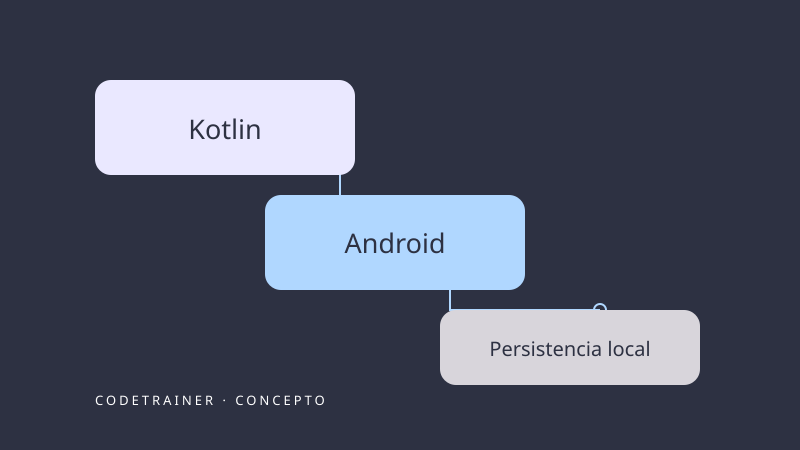

En desarrollo
CodeTrainer
Aplicación móvil orientada a estudiantes que desean practicar programación, recibir retroalimentación y seguir su progreso.
Explorar el proyecto →Construir / Compartir
Un espacio para conectar problemas, decisiones técnicas y conocimientos universitarios. Los proyectos forman parte de la bitácora y del portafolio.

Aplicación móvil orientada a estudiantes que desean practicar programación, recibir retroalimentación y seguir su progreso.
Explorar el proyecto →Aplicación móvil orientada a estudiantes que desean practicar programación, recibir retroalimentación y seguir su progreso.
Explorar el proyecto →